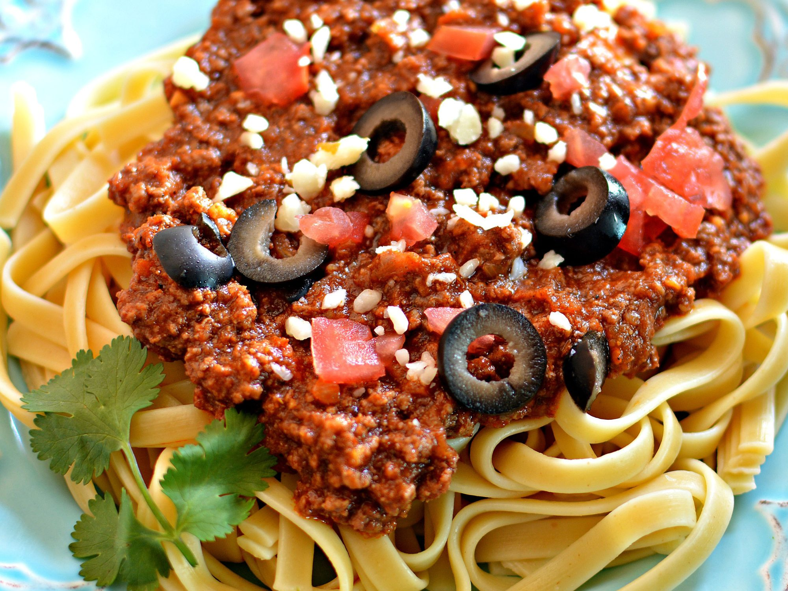

Taco pasta

For all the italo-taco lovers
If you ever find yourself with taco leftovers, this is the meal to go
Fairly simple, and yet amazing. These words sum up this dish perfectly
Ingredients
- 16 ounces dry fettuccine pasta
- 1 pound lean ground beef
- 1.25 ounce package taco seasoning mix
- 4 ounces shredded Cheddar cheese
- 3 tomatoes, diced
- 1 pinch garlic powder
- 6 ounce can black olives, drained and chopped
- 2 tablespoons grated Parmesan cheese
Steps
- Cook pasta al dente
- Meanwhile, cook ground beef in a large skillet
- Drain excess grease and add taco seasoning as instructed on the packet
- Put pasta in a large bowl and toss with cooked meat, prepared cheese and tomatoes
- Season with salt, pepper and garlic powder
- Sprinkle with parmesan. Add olives if desired